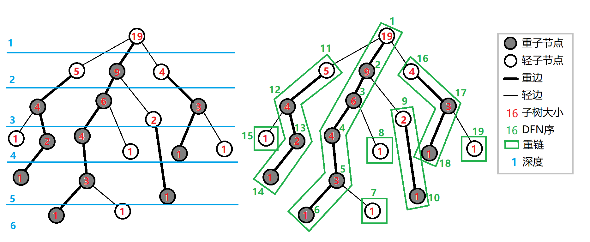
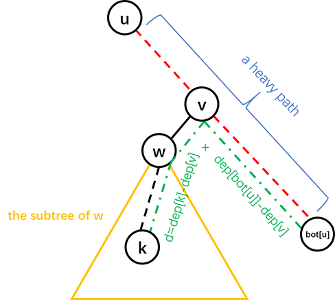

树链剖分
树链剖分的思想及能解决的问题¶
树链剖分用于将树分割成若干条链的形式，以维护树上路径的信息。
具体来说，将整棵树剖分为若干条链，使它组合成线性结构，然后用其他的数据结构维护信息。
树链剖分（树剖/链剖）有多种形式，如 重链剖分，长链剖分 和用于 Link/cut Tree 的剖分（有时被称作“实链剖分”），大多数情况下（没有特别说明时），“树链剖分”都指“重链剖分”。
重链剖分可以将树上的任意一条路径划分成不超过 O(\log n) 条连续的链，每条链上的点深度互不相同（即是自底向上的一条链，链上所有点的 LCA 为链的一个端点）。
重链剖分还能保证划分出的每条链上的节点 DFS 序连续，因此可以方便地用一些维护序列的数据结构（如线段树）来维护树上路径的信息。
如：
- 修改 树上两点之间的路径上 所有点的值。
- 查询 树上两点之间的路径上 节点权值的 和/极值/其它（在序列上可以用数据结构维护，便于合并的信息）。
除了配合数据结构来维护树上路径信息，树剖还可以用来 O(\log n)（且常数较小）地求 LCA。在某些题目中，还可以利用其性质来灵活地运用树剖。
重链剖分¶
我们给出一些定义：
定义 重子节点 表示其子节点中子树最大的子结点。如果有多个子树最大的子结点，取其一。如果没有子节点，就无重子节点。
定义 轻子节点 表示剩余的所有子结点。
从这个结点到重子节点的边为 重边。
到其他轻子节点的边为 轻边。
若干条首尾衔接的重边构成 重链。
把落单的结点也当作重链，那么整棵树就被剖分成若干条重链。
如图：

实现¶
树剖的实现分两个 DFS 的过程。伪代码如下：
第一个 DFS 记录每个结点的父节点（father）、深度（deep）、子树大小（size）、重子节点（hson）。
第二个 DFS 记录所在链的链顶（top，应初始化为结点本身）、重边优先遍历时的 DFS 序（dfn）、DFS 序对应的节点编号（rank）。
以下为代码实现。
我们先给出一些定义：
- fa(x) 表示节点 x 在树上的父亲。
- dep(x) 表示节点 x 在树上的深度。
- siz(x) 表示节点 x 的子树的节点个数。
- son(x) 表示节点 x 的 重儿子。
- top(x) 表示节点 x 所在 重链 的顶部节点（深度最小）。
- dfn(x) 表示节点 x 的 DFS 序，也是其在线段树中的编号。
- rnk(x) 表示 DFS 序所对应的节点编号，有 rnk(dfn(x))=x。
我们进行两遍 DFS 预处理出这些值，其中第一次 DFS 求出 fa(x)，dep(x)，siz(x)，son(x)，第二次 DFS 求出 top(x)，dfn(x)，rnk(x)。
1 2 3 4 5 6 7 8 9 10 11 12 13 14 15 16 17 18 19 20 21 22 | void dfs1(int o) {
son[o] = -1;
siz[o] = 1;
for (int j = h[o]; j; j = nxt[j])
if (!dep[p[j]]) {
dep[p[j]] = dep[o] + 1;
fa[p[j]] = o;
dfs1(p[j]);
siz[o] += siz[p[j]];
if (son[o] == -1 || siz[p[j]] > siz[son[o]]) son[o] = p[j];
}
}
void dfs2(int o, int t) {
top[o] = t;
cnt++;
dfn[o] = cnt;
rnk[cnt] = o;
if (son[o] == -1) return;
dfs2(son[o], t); // 优先对重儿子进行 DFS，可以保证同一条重链上的点 DFS 序连续
for (int j = h[o]; j; j = nxt[j])
if (p[j] != son[o] && p[j] != fa[o]) dfs2(p[j], p[j]);
}
|
重链剖分的性质¶
树上每个节点都属于且仅属于一条重链。
重链开头的结点不一定是重子节点（因为重边是对于每一个结点都有定义的）。
所有的重链将整棵树 完全剖分。
在剖分时 重边优先遍历，最后树的 DFN 序上，重链内的 DFN 序是连续的。按 DFN 排序后的序列即为剖分后的链。
一颗子树内的 DFN 序是连续的。
可以发现，当我们向下经过一条 轻边 时，所在子树的大小至少会除以二。
因此，对于树上的任意一条路径，把它拆分成从 lca 分别向两边往下走，分别最多走 O(\log n) 次，因此，树上的每条路径都可以被拆分成不超过 O(\log n) 条重链。
常见应用¶
路径上维护¶
用树链剖分求树上两点路径权值和，伪代码如下：
链上的 DFS 序是连续的，可以使用线段树、树状数组维护。
每次选择深度较大的链往上跳，直到两点在同一条链上。
同样的跳链结构适用于维护、统计路径上的其他信息。
子树维护¶
有时会要求，维护子树上的信息，譬如将以 x 为根的子树的所有结点的权值增加 v。
在 DFS 搜索的时候，子树中的结点的 DFS 序是连续的。
每一个结点记录 bottom 表示所在子树连续区间末端的结点。
这样就把子树信息转化为连续的一段区间信息。
求最近公共祖先¶
不断向上跳重链，当跳到同一条重链上时，深度较小的结点即为 LCA。
向上跳重链时需要先跳所在重链顶端深度较大的那个。
参考代码：
1 2 3 4 5 6 7 8 9 | int lca(int u, int v) {
while (top[u] != top[v]) {
if (dep[top[u]] > dep[top[v]])
u = fa[top[u]];
else
v = fa[top[v]];
}
return dep[u] > dep[v] ? v : u;
}
|
怎么有理有据地卡树剖
一般情况下树剖的 O(\log n) 常数不满很难卡，如果要卡只能建立二叉树深度低。
于是我们可以考虑折中方案。
我们建立一颗 \sqrt{n} 个节点的二叉树。对于每个节点到其儿子的边，我们将其替换成一条长度为 \sqrt{n} 的链。
这样子我们可以将随机询问轻重链切换次数卡到平均 \frac{\log n}{2} 次，同时有 O(\sqrt{n} \log n) 的深度。
加上若干随机叶子看上去可以卡树剖。但是树剖常数小有可能卡不掉。
例题¶
「ZJOI2008」树的统计¶
题目大意¶
对一棵有 n 个节点，节点带权值的静态树，进行三种操作共 q 次：
- 修改单个节点的权值；
- 查询 u 到 v 的路径上的最大权值；
- 查询 u 到 v 的路径上的权值之和。
保证 1\le n\le 30000，0\le q\le 200000。
解法¶
根据题面以及以上的性质，你的线段树需要维护三种操作：
- 单点修改；
- 区间查询最大值；
- 区间查询和。
单点修改很容易实现。
由于子树的 DFS 序连续（无论是否树剖都是如此），修改一个节点的子树只用修改这一段连续的 DFS 序区间。
问题是如何修改/查询两个节点之间的路径。
考虑我们是如何用 倍增法求解 LCA 的。首先我们 将两个节点提到同一高度，然后将两个节点一起向上跳。对于树链剖分也可以使用这样的思想。
在向上跳的过程中，如果当前节点在重链上，向上跳到重链顶端，如果当前节点不在重链上，向上跳一个节点。如此直到两节点相同。沿途更新/查询区间信息。
对于每个询问，最多经过 O(\log n) 条重链，每条重链上线段树的复杂度为 O(\log n)，因此总时间复杂度为 O(n\log n+q\log^2 n)。实际上重链个数很难达到 O(\log n)（可以用完全二叉树卡满），所以树剖在一般情况下常数较小。
给出一种代码实现：
1 2 3 4 5 6 7 8 9 10 11 12 13 14 15 16 17 | // st 是线段树结构体
int querymax(int x, int y) {
int ret = -inf, fx = top[x], fy = top[y];
while (fx != fy) {
if (dep[fx] >= dep[fy])
ret = max(ret, st.query1(1, 1, n, dfn[fx], dfn[x])), x = fa[fx];
else
ret = max(ret, st.query1(1, 1, n, dfn[fy], dfn[y])), y = fa[fy];
fx = top[x];
fy = top[y];
}
if (dfn[x] < dfn[y])
ret = max(ret, st.query1(1, 1, n, dfn[x], dfn[y]));
else
ret = max(ret, st.query1(1, 1, n, dfn[y], dfn[x]));
return ret;
}
|
参考代码
1 2 3 4 5 6 7 8 9 10 11 12 13 14 15 16 17 18 19 20 21 22 23 24 25 26 27 28 29 30 31 32 33 34 35 36 37 38 39 40 41 42 43 44 45 46 47 48 49 50 51 52 53 54 55 56 57 58 59 60 61 62 63 64 65 66 67 68 69 70 71 72 73 74 75 76 77 78 79 80 81 82 83 84 85 86 87 88 89 90 91 92 93 94 95 96 97 98 99 100 101 102 103 104 105 106 107 108 109 110 111 112 113 114 115 116 117 118 119 120 121 122 123 124 125 126 127 128 129 | #include <algorithm>
#include <cstdio>
#include <cstring>
#define lc o << 1
#define rc o << 1 | 1
const int maxn = 60010;
const int inf = 2e9;
int n, a, b, w[maxn], q, u, v;
int cur, h[maxn], nxt[maxn], p[maxn];
int siz[maxn], top[maxn], son[maxn], dep[maxn], fa[maxn], dfn[maxn], rnk[maxn],
cnt;
char op[10];
inline void add_edge(int x, int y) {
cur++;
nxt[cur] = h[x];
h[x] = cur;
p[cur] = y;
}
struct SegTree {
int sum[maxn * 4], maxx[maxn * 4];
void build(int o, int l, int r) {
if (l == r) {
sum[o] = maxx[o] = w[rnk[l]];
return;
}
int mid = (l + r) >> 1;
build(lc, l, mid);
build(rc, mid + 1, r);
sum[o] = sum[lc] + sum[rc];
maxx[o] = std::max(maxx[lc], maxx[rc]);
}
int query1(int o, int l, int r, int ql, int qr) { // max
if (l > qr || r < ql) return -inf;
if (ql <= l && r <= qr) return maxx[o];
int mid = (l + r) >> 1;
return std::max(query1(lc, l, mid, ql, qr), query1(rc, mid + 1, r, ql, qr));
}
int query2(int o, int l, int r, int ql, int qr) { // sum
if (l > qr || r < ql) return 0;
if (ql <= l && r <= qr) return sum[o];
int mid = (l + r) >> 1;
return query2(lc, l, mid, ql, qr) + query2(rc, mid + 1, r, ql, qr);
}
void update(int o, int l, int r, int x, int t) {
if (l == r) {
maxx[o] = sum[o] = t;
return;
}
int mid = (l + r) >> 1;
if (x <= mid)
update(lc, l, mid, x, t);
else
update(rc, mid + 1, r, x, t);
sum[o] = sum[lc] + sum[rc];
maxx[o] = std::max(maxx[lc], maxx[rc]);
}
} st;
void dfs1(int o) {
son[o] = -1;
siz[o] = 1;
for (int j = h[o]; j; j = nxt[j])
if (!dep[p[j]]) {
dep[p[j]] = dep[o] + 1;
fa[p[j]] = o;
dfs1(p[j]);
siz[o] += siz[p[j]];
if (son[o] == -1 || siz[p[j]] > siz[son[o]]) son[o] = p[j];
}
}
void dfs2(int o, int t) {
top[o] = t;
cnt++;
dfn[o] = cnt;
rnk[cnt] = o;
if (son[o] == -1) return;
dfs2(son[o], t);
for (int j = h[o]; j; j = nxt[j])
if (p[j] != son[o] && p[j] != fa[o]) dfs2(p[j], p[j]);
}
int querymax(int x, int y) {
int ret = -inf, fx = top[x], fy = top[y];
while (fx != fy) {
if (dep[fx] >= dep[fy])
ret = std::max(ret, st.query1(1, 1, n, dfn[fx], dfn[x])), x = fa[fx];
else
ret = std::max(ret, st.query1(1, 1, n, dfn[fy], dfn[y])), y = fa[fy];
fx = top[x];
fy = top[y];
}
if (dfn[x] < dfn[y])
ret = std::max(ret, st.query1(1, 1, n, dfn[x], dfn[y]));
else
ret = std::max(ret, st.query1(1, 1, n, dfn[y], dfn[x]));
return ret;
}
int querysum(int x, int y) {
int ret = 0, fx = top[x], fy = top[y];
while (fx != fy) {
if (dep[fx] >= dep[fy])
ret += st.query2(1, 1, n, dfn[fx], dfn[x]), x = fa[fx];
else
ret += st.query2(1, 1, n, dfn[fy], dfn[y]), y = fa[fy];
fx = top[x];
fy = top[y];
}
if (dfn[x] < dfn[y])
ret += st.query2(1, 1, n, dfn[x], dfn[y]);
else
ret += st.query2(1, 1, n, dfn[y], dfn[x]);
return ret;
}
int main() {
scanf("%d", &n);
for (int i = 1; i < n; i++)
scanf("%d%d", &a, &b), add_edge(a, b), add_edge(b, a);
for (int i = 1; i <= n; i++) scanf("%d", w + i);
dep[1] = 1;
dfs1(1);
dfs2(1, 1);
st.build(1, 1, n);
scanf("%d", &q);
while (q--) {
scanf("%s%d%d", op, &u, &v);
if (!strcmp(op, "CHANGE")) st.update(1, 1, n, dfn[u], v);
if (!strcmp(op, "QMAX")) printf("%d\n", querymax(u, v));
if (!strcmp(op, "QSUM")) printf("%d\n", querysum(u, v));
}
return 0;
}
|
Nauuo and Binary Tree¶
这是一道交互题，也是树剖的非传统应用。
题目大意¶
有一棵以 1 为根的二叉树，你可以询问任意两点之间的距离，求出每个点的父亲。
节点数不超过 3000，你最多可以进行 30000 次询问。
解法¶
首先可以通过 n-1 次询问确定每个节点的深度。
然后考虑按深度从小到大确定每个节点的父亲，这样的话确定一个节点的父亲时其所有祖先一定都是已知的。
确定一个节点的父亲之前，先对树已知的部分进行重链剖分。
假设我们需要在子树 u 中找节点 k 所在的位置，我们可以询问 k 与 u 所在重链的尾端的距离，就可以进一步确定 k 的位置，具体见图：

其中红色虚线是一条重链，d 是询问的结果即 dis(k, bot[u])，v 的深度为 (dep[k]+dep[bot[u]]-d)/2。
这样的话，如果 v 只有一个儿子，k 的父亲就是 v，否则可以递归地在 w 的子树中找 k 的父亲。
时间复杂度 O(n^2)，询问复杂度 O(n\log n)。
具体地，设 T(n) 为最坏情况下在一棵大小为 n 的树中找到一个新节点的位置所需的询问次数，可以得到：
2999+\sum_{i=1}^{2999}T(i)\le 29940，事实上这个上界是可以通过构造数据达到的，然而只要进行一些随机扰动（如对深度进行排序时使用不稳定的排序算法），询问次数很难超过 21000 次。
参考代码
1 2 3 4 5 6 7 8 9 10 11 12 13 14 15 16 17 18 19 20 21 22 23 24 25 26 27 28 29 30 31 32 33 34 35 36 37 38 39 40 41 42 43 44 45 46 47 48 49 50 51 52 53 54 55 56 57 58 59 60 61 62 63 64 65 66 67 68 69 70 71 72 73 74 75 76 77 78 79 80 81 82 | #include <algorithm>
#include <cstdio>
#include <iostream>
using namespace std;
const int N = 3010;
int n, fa[N], ch[N][2], dep[N], siz[N], son[N], bot[N], id[N];
int query(int u, int v) {
printf("? %d %d\n", u, v);
fflush(stdout);
int d;
scanf("%d", &d);
return d;
}
void setFather(int u, int v) {
fa[v] = u;
if (ch[u][0])
ch[u][1] = v;
else
ch[u][0] = v;
}
void dfs(int u) {
if (ch[u][0]) dfs(ch[u][0]);
if (ch[u][1]) dfs(ch[u][1]);
siz[u] = siz[ch[u][0]] + siz[ch[u][1]] + 1;
if (ch[u][1])
son[u] = int(siz[ch[u][0]] < siz[ch[u][1]]);
else
son[u] = 0;
if (ch[u][son[u]])
bot[u] = bot[ch[u][son[u]]];
else
bot[u] = u;
}
void solve(int u, int k) {
if (!ch[u][0]) {
setFather(u, k);
return;
}
int d = query(k, bot[u]);
int v = bot[u];
while (dep[v] > (dep[k] + dep[bot[u]] - d) / 2) v = fa[v];
int w = ch[v][son[v] ^ 1];
if (w)
solve(w, k);
else
setFather(v, k);
}
int main() {
int i;
scanf("%d", &n);
for (i = 2; i <= n; ++i) {
id[i] = i;
dep[i] = query(1, i);
}
sort(id + 2, id + n + 1, [](int x, int y) { return dep[x] < dep[y]; });
for (i = 2; i <= n; ++i) {
dfs(1);
solve(1, id[i]);
}
printf("!");
for (i = 2; i <= n; ++i) printf(" %d", fa[i]);
printf("\n");
fflush(stdout);
return 0;
}
|
长链剖分¶
长链剖分本质上就是另外一种链剖分方式。
定义 重子节点 表示其子节点中子树深度最大的子结点。如果有多个子树最大的子结点，取其一。如果没有子节点，就无重子节点。
定义 轻子节点 表示剩余的子结点。
从这个结点到重子节点的边为 重边。
到其他轻子节点的边为 轻边。
若干条首尾衔接的重边构成 重链。
把落单的结点也当作重链，那么整棵树就被剖分成若干条重链。
如图（这种剖分方式既可以看成重链剖分也可以看成长链剖分）：
长链剖分实现方式和重链剖分类似，这里就不再展开。
常见应用¶
首先，我们发现长链剖分从一个节点到根的路径的轻边切换条数是 \sqrt{n} 级别的。
如何构造数据将轻重边切换次数卡满
我们可以构造这么一颗二叉树 T：
假设构造的二叉树参数为 D。
若 D \neq 0, 则在左儿子构造一颗参数为 D-1 的二叉树，在右儿子构造一个长度为 2D-1 的链。
若 D = 0, 则我们可以直接构造一个单独叶节点，并且结束调用。
这样子构造一定可以将单独叶节点到根的路径全部为轻边且需要 D^2 级别的节点数。
取 D=\sqrt{n} 即可。
长链剖分优化 DP¶
一般情况下可以使用长链剖分来优化的 DP 会有一维状态为深度维。
我们可以考虑使用长链剖分优化树上 DP。
具体的，我们每个节点的状态直接继承其重儿子的节点状态，同时将轻儿子的 DP 状态暴力合并。
我们设 f_{i,j} 表示在子树 i 内，和 i 距离为 j 的点数。
直接暴力转移时间复杂度为 O(n^2)
我们考虑每次转移我们直接继承重儿子的 DP 数组和答案，并且考虑在此基础上进行更新。
首先我们需要将重儿子的 DP 数组前面插入一个元素 1, 这代表着当前节点。
然后我们将所有轻儿子的 DP 数组暴力和当前节点的 DP 数组合并。
注意到因为轻儿子的 DP 数组长度为轻儿子所在重链长度，而所有重链长度和为 n。
也就是说，我们直接暴力合并轻儿子的总时间复杂度为 O(n)。
注意，一般情况下 DP 数组的内存分配为一条重链整体分配内存，链上不同的节点有不同的首位置指针。
DP 数组的长度我们可以根据子树最深节点算出。
例题参考代码：
1 2 3 4 5 6 7 8 9 10 11 12 13 14 15 16 17 18 19 20 21 22 23 24 25 26 27 28 29 30 31 32 33 34 35 36 37 38 39 40 41 42 43 44 45 46 47 48 49 50 51 52 53 54 55 56 57 58 59 60 61 62 | #include <bits/stdc++.h>
using namespace std;
const int N = 1000005;
struct edge {
int to, next;
} e[N * 2];
int head[N], tot, n;
int d[N], fa[N], mx[N];
int *f[N], g[N], mxp[N];
int dfn[N];
void add(int x, int y) {
e[++tot] = (edge){y, head[x]};
head[x] = tot;
}
void dfs1(int x) {
d[x] = 1;
for (int i = head[x]; i; i = e[i].next)
if (e[i].to != fa[x]) {
fa[e[i].to] = x;
dfs1(e[i].to);
d[x] = max(d[x], d[e[i].to] + 1);
if (d[e[i].to] > d[mx[x]]) mx[x] = e[i].to;
}
}
void dfs2(int x) {
dfn[x] = ++*dfn;
f[x] = g + dfn[x];
if (mx[x]) dfs2(mx[x]);
for (int i = head[x]; i; i = e[i].next)
if (e[i].to != fa[x] && e[i].to != mx[x]) dfs2(e[i].to);
}
void getans(int x) {
if (mx[x]) {
getans(mx[x]);
mxp[x] = mxp[mx[x]] + 1;
}
f[x][0] = 1;
if (f[x][mxp[x]] <= 1) mxp[x] = 0;
for (int i = head[x]; i; i = e[i].next)
if (e[i].to != fa[x] && e[i].to != mx[x]) {
getans(e[i].to);
int len = d[e[i].to];
For(j, 0, len - 1) {
f[x][j + 1] += f[e[i].to][j];
if (f[x][j + 1] > f[x][mxp[x]]) mxp[x] = j + 1;
if (f[x][j + 1] == f[x][mxp[x]] && j + 1 < mxp[x]) mxp[x] = j + 1;
}
}
}
int main() {
scanf("%d", &n);
for (int i = 1; i < n; i++) {
int x, y;
scanf("%d%d", &x, &y);
add(x, y);
add(y, x);
}
dfs1(1);
dfs2(1);
getans(1);
for (int i = 1; i <= n; i++) printf("%d\n", mxp[i]);
}
|
当然长链剖分优化 DP 技巧非常多，包括但是不仅限于打标记等等。这里不再展开。
参考 租酥雨的博客。
长链剖分求 k 级祖先¶
即询问一个点向父亲跳 k 次跳到的节点。
首先我们假设我们已经预处理了每一个节点的 2^i 级祖先。
现在我们假设我们找到了询问节点的 2^i 级祖先满足 2^i < k < 2^{i+1}。
我们考虑求出其所在重链的节点并且按照深度列入表格。假设重链长度为 d。
同时我们在预处理的时候找到每条重链的根节点的 1 到 d 级祖先，同样放入表格。
根据长链剖分的性质，k-2^i < 2^i \leq d, 也就是说，我们可以 O(1) 在这条长链的表格上求出的这个节点的 k 级祖先。
预处理需要倍增出 2^i 次级祖先，同时需要预处理每条重链对应的表格。
预处理复杂度 O(n\log n), 询问复杂度 O(1)。
练习¶
「luogu P3379」【模板】最近公共祖先（LCA）（树剖求 LCA 无需数据结构，可以用作练习）
「JLOI2014」松鼠的新家（当然也可以用树上差分）
「POI2014」Hotel 加强版（长链剖分优化 DP)
攻略（长链剖分优化贪心）
build本页面最近更新：，更新历史
edit发现错误？想一起完善？ 在 GitHub 上编辑此页！
people本页面贡献者：Ir1d, Marcythm, ouuan, hsfzLZH1, Xeonacid, greyqz, Chrogeek, ftxj, sshwy, LuoshuiTianyi, hyp1231
copyright本页面的全部内容在 CC BY-SA 4.0 和 SATA 协议之条款下提供，附加条款亦可能应用